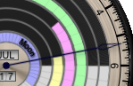
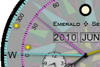

As with Mauna Kea and the back of Geneva, the rise and set times are those of the most recent event (rise or set) and of the next event for the same planet. Contrast this with the back of this watch, with Haleakala, and with Geneva's front, all of which show the rise and set times for the current calendar day.
The single hand shows the current 24-hour time (with midnight on top). A planet is currently above the horizon if the hand intersects the colored part of its ring.

So in the example to the right: the time is about 5:15am, about 45 minutes before sunrise;
the Moon, Mars and Jupiter are up;
Venus is just rising;
and Mercury and Saturn are below the horizon.
The three subdials show the rise, transit and set times for the selected planet. The tiny dot above 12 on each one is black for PM, white for AM, and red if there is no such time for the selected planet for this day. (There is always a transit time, which is defined as the time at which the planet crosses the meridian, though at high latitudes it may be below the horizon.)
The long cyan hand indicates the selected planet's azimuth read against the outermost dial. The shorter magenta hand indicates its altitude read against the magenta half-dial. And the yellow hand indicates its position in the zodiac read against the yellow arc on the right. In addition, three tiny sun icons show the position of the Sun on these dials.
 In this example the selected planet (Venus) is almost exactly due west at 38 degrees above the horizon, 20 degrees south of and much higher than the Sun (a possible daytime sighting opportunity).
The large central hands show hours and minutes in ordinary 12-hour format (but with no dial). The dot just above the six o'clock position is black for PM and white for AM.
In Set mode, you can tap the date windows and drag the time hands as usual. Tapping the Rise, Transit and Set subdials advances the main time to the subdial's time.